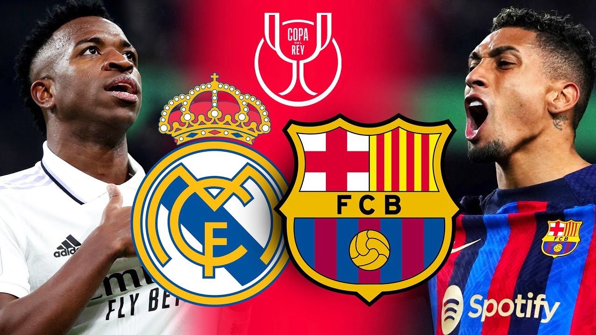

España
La liga-Primera división
Agotadas las entradas para el último Clásico de la temporada
Los aficionados al fútbol no se cansan de ver en directo los enfrentamientos entre el Barcelona y el Real Madrid. Esta temporada ya se han cruzado cuatro veces, en partidos oficiales, pero ya se han agotado las entradas para el quinto y último: el choque de vuelta de las semifinales de la Copa del Rey que se disputa en el Camp Nou el 5 de abril..
Enderson Quintero